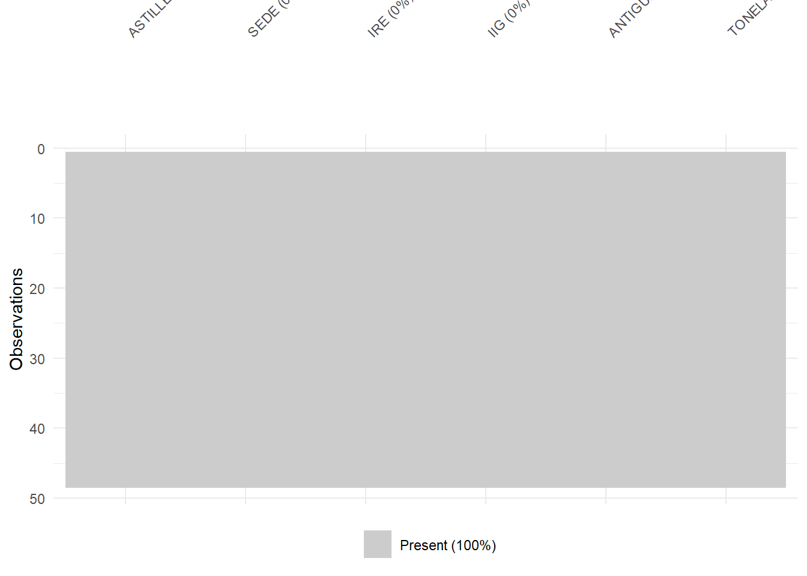
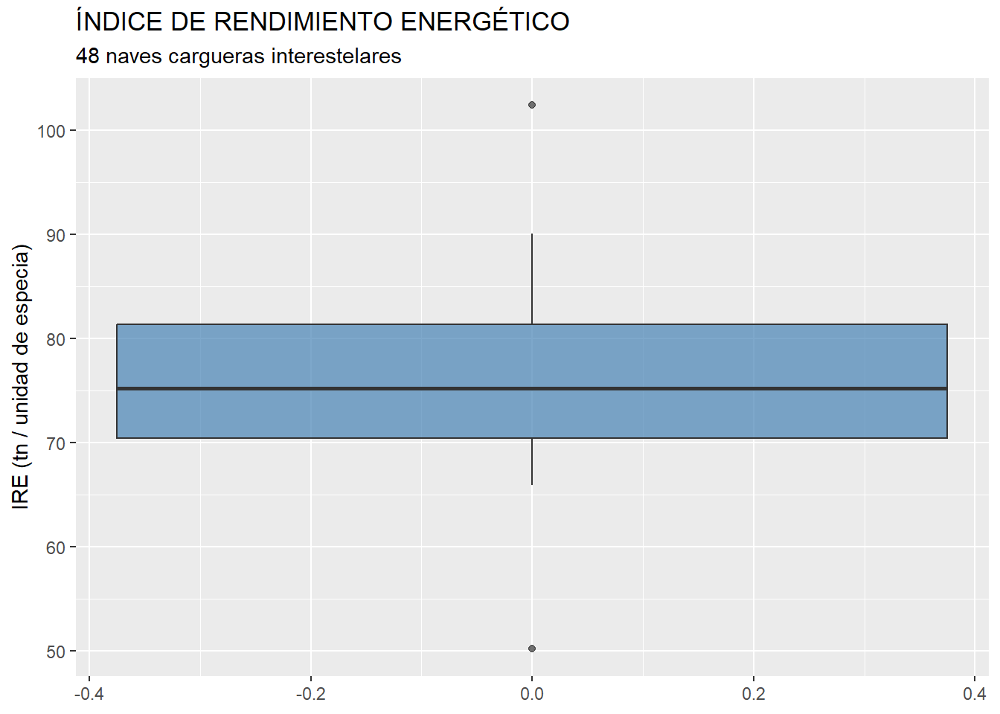
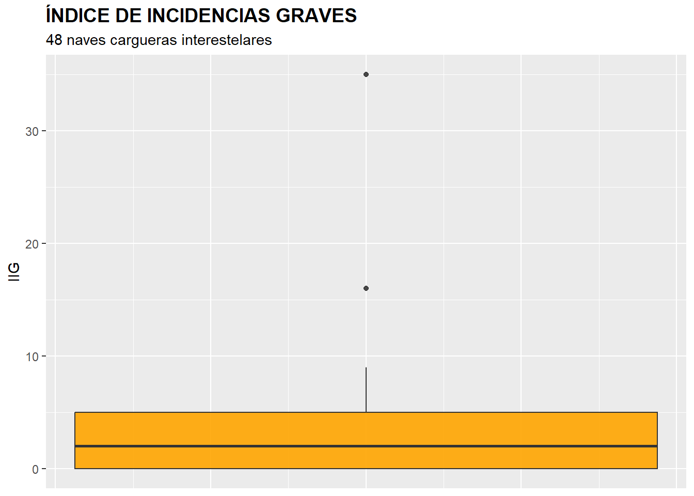
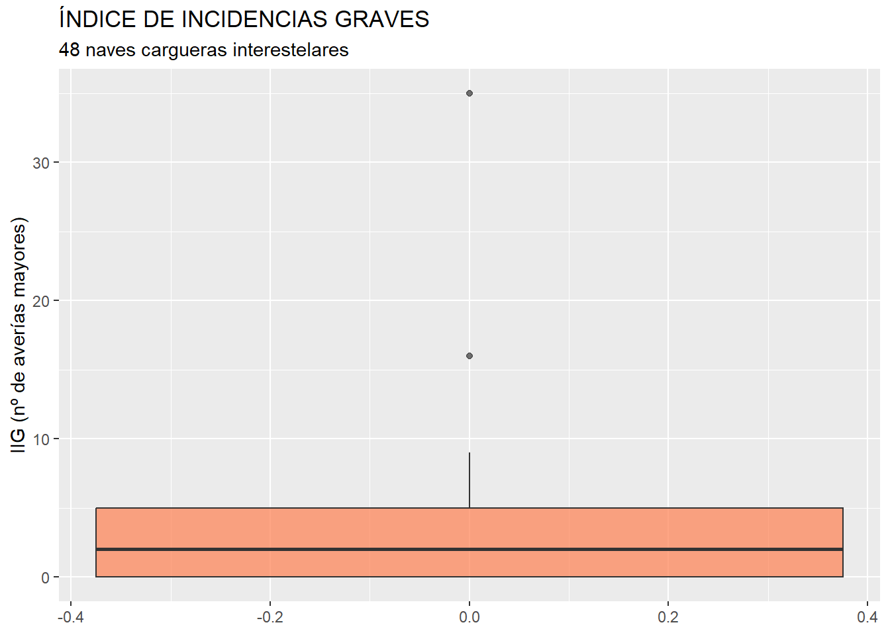

8 Análisis de la varianza.

Figura 8.1. Astillero interestelar en órbita estacionaria.
8.1 Introducción.
El análisis de la varianza (ANOVA) puede considerarse una generalización del contraste de hipótesis de medias poblacionales iguales para el caso de poblaciones normales y con varianzas desconocidas, pero iguales. La generalización consiste en poder considerar más de dos poblaciones. La hipótesis nula será la que afirma que las medias poblacionales de la variable métrica en estudio, para todas las poblaciones, son iguales. La hipótesis alternativa, por su lado, afirmará que existe al menos dos poblaciones con medias diferentes. Como todo contraste, para llevarlo acabo hemos de tener una muestra representativa de cada población, y fijar un nivel de significación (usualmente 0.05).
También se puede considerar el ANOVA como un tipo especial de análisis de regresión, en la que la variable dependiente es una variable métrica, y las variables explicativas son atributos o factores (en escala nominal u ordinal). La misión de los factores es clasificar a los casos que constituyen nuestra muestra en distintas submuestras, cada una representativa de una de las subpoblaciones cuyas medias en la variable en estudio se quiere comparar.
8.2 ANOVA de un solo factor.
Aunque se pueden realizar ANOVAs con más de un atributo o factor, en este ejemplo nos ceñiremos al caso más simple, en el que solo hay un atributo o factor que se ocupa de distribuir los casos de la muestra entre los distintos grupos o submuestras (a partir de la categoría o nivel que toma cada caso).
8.2.1 El Informe Crestfall.
Todas las naves del sector del transporte interestelar de mercancías se propulsan con un mismo combustible: la especia. Sin embargo, no todas las naves se construyen igual. El diseño, los materiales, los sistemas de navegación y los protocolos de mantenimiento son responsabilidad de los grandes astilleros interestelares: las compañías que diseñan, fabrican y suministran los cargueros que luego operan las distintas empresas de transporte. La calidad y las prestaciones de las naves dependen, en buena medida, del astillero del que proceden.
La Agencia Interplanetaria de Transporte de Mercancías (AITM) realiza, cada cierto tiempo, estudios comparativos entre los principales astilleros del sector. El estudio que reproduciremos en este capítulo lleva a cabo dicha comparación entre los tres grandes astilleros activos en el momento: Korrigan Heavy Works, Selene Dynamics y Arcturus Shipyards. La investigación está dirigida por el doctor Oren Crestfall, analista técnico de la agencia, por lo que el informe que recoge sus resultados se conoce como Informe Crestfall.

Figura 8.2. Planos de diversos modelos de cargueros de mercancías.
En el estudio se han seleccionado 48 naves cargueras, 16 de cada uno de los tres astilleros, con independencia de cuál sea la empresa de transporte que las opera actualmente. Sobre cada nave se ha registrado, entre otras variables, su Índice de Rendimiento Energético (IRE) —toneladas de carga útil transportadas por unidad de especia consumida en la ruta estándar de referencia Sol–Centauri B— y su Índice de Incidencias Graves (IIG) —número de averías mayores registradas a lo largo de su vida operativa—. El factor que clasifica las naves es, por tanto, el ASTILLERO fabricante.
La AITM se plantea dos preguntas:
¿Hay astilleros que fabrican naves con un rendimiento energético significativamente superior a las de otros?
¿Hay astilleros cuyas naves son significativamente más fiables (menos averías graves) que las de otros?
Ambas preguntas tienen la misma estructura: comparar las medias de una variable métrica entre tres grupos definidos por un factor. El contraste natural es, pues, el ANOVA. Pero como veremos a lo largo del capítulo, las dos preguntas requerirán técnicas distintas: la primera podrá responderse con el ANOVA en sentido estricto; la segunda, no, y deberá responderse con una técnica robusta.
8.2.2 Preparación de los datos.
Los datos están almacenados en el archivo de Microsoft Excel “astilleros_48.xlsx”, y el script con el código del ejemplo se halla contenido en el fichero “anova_rstars.R”. Vamos a suponer que trabajaremos en un proyecto de RStudio al que denominaremos “anova”.
Una vez abierto el script en el editor de RStudio, comprobaremos que la primera parte del código está dedicada a la limpieza de la memoria (Environment) y a la importación de los datos. Para ello, activaremos el paquete readxl y utilizaremos la función read_excel(), indicando en los argumentos el archivo a explorar, y la hoja en la cual se encuentran los datos (hoja “Datos”). Los datos se almacenarán en el data frame “datos”. En este data frame, la primera columna no es una verdadera variable, sino que se compone de los nombres de los casos o naves. Con una línea de código adicional transformaremos esa primera columna en el nombre de las filas, de modo que tal columna abandona su rol de variable. En definitiva, el código para importar los datos es:
# Análisis ANOVA de un factor.
rm(list = ls())
# DATOS
library (readxl)
datos <- read_excel("astilleros_48.xlsx", sheet = "Datos")
datos <- data.frame(datos, row.names = 1)
summary (datos)## ASTILLERO SEDE IRE
## Length:48 Length:48 Min. : 50.20
## Class :character Class :character 1st Qu.: 70.39
## Mode :character Mode :character Median : 75.21
## Mean : 76.01
## 3rd Qu.: 81.36
## Max. :102.40
##
## IIG ANTIGÜEDAD TONELAJE
## Min. : 0.000 Min. : 1.000 Min. :519.7
## 1st Qu.: 0.000 1st Qu.: 5.000 1st Qu.:646.0
## Median : 2.000 Median : 9.000 Median :730.5
## Mean : 3.396 Mean : 9.458 Mean :734.7
## 3rd Qu.: 5.000 3rd Qu.:14.000 3rd Qu.:845.7
## Max. :35.000 Max. :24.000 Max. :942.98.2.3 El primer estudio: el Índice de Rendimiento Energético (IRE).
Comencemos con la primera pregunta de la AITM: ¿hay diferencias significativas en el rendimiento energético medio de las naves según el astillero que las fabrica? La hipótesis nula del contraste afirma que no existen diferencias entre los IRE medios de las naves de los tres astilleros (KORRIGAN, SELENE y ARCTURUS). La hipótesis alternativa, en cambio, afirma que existe al menos una diferencia significativa entre dos de esas medias poblacionales.
Antes de proceder al análisis de la varianza propiamente dicho, hemos de preparar nuestros datos mediante la localización de missing values y outliers. Los outliers, en el ANOVA, pueden tener una gran influencia (ya que se trabaja en términos medios) sobre los resultados, por lo que deben ser tratados convenientemente.
Para localizar los casos concretos de missing values, aplicaremos la función auxiliar explora_na() del paquete MATrstars, que ya introdujimos en el capítulo 5. Al pasarle el data frame “datos” y las variables de interés para este primer estudio (IRE y ASTILLERO), la función diagnostica gráficamente los missing values, lista los casos afectados y, con accion = "eliminar", devuelve el data frame filtrado. Guardamos el resultado en una copia llamada “muestra”, con la que trabajaremos en adelante (para mantener la integridad del data frame original). En este ejemplo, los datos están completos, por lo que la función no eliminará ningún caso, pero se incluye en el código para mantener el procedimiento general:
# Missing values
library (dplyr)
muestra <- explora_na(
datos,
variables = c(IRE, ASTILLERO),
accion = "eliminar",
titulo = "Astilleros: valores ausentes",
subtitulo = "48 naves cargueras interestelares"
)Una vez tratados los casos con valores perdidos o missing values, es necesario detectar la presencia de outliers o casos atípicos en la muestra, que pudieran desvirtuar los resultados derivados del ANOVA. Para ello, aplicamos la función auxiliar explora_outliers() del paquete MATrstars que ya se presentó en el capítulo 5. Al pasarle una sola variable métrica —en este caso IRE— la función detecta el caso univariante y aplica directamente la regla clásica de 1.5 veces el rango intercuartílico sobre ella. Con accion = "eliminar" la función devuelve un nuevo data frame sin los casos identificados como outliers, que llamaremos “muestra_so”:
options(matrstars.figura_num = "8.3", matrstars.tabla_num = "8.1")
# Outliers
muestra_so <- explora_outliers(
muestra,
variables = IRE,
accion = "eliminar",
titulo = "ÍNDICE DE RENDIMIENTO ENERGÉTICO",
subtitulo = "48 naves cargueras interestelares"
)
Figura 8.3
| IRE | |
|---|---|
| iron sovereign | 50.2 |
| aurora swift | 102.4 |
Tabla 8.1
Las naves identificadas como outliers son “iron sovereign” (un viejo carguero de Korrigan con un IRE inusualmente bajo, posiblemente fruto de un desgaste excepcional de su cámara de combustión) y “aurora swift” (un prototipo de Selene con un IRE extraordinariamente alto, probablemente derivado de un calibrado experimental). Como ocurría con los missing values, el tratamiento de los outliers depende de la información que se tenga, existiendo varias alternativas (corrección del dato, estimación, etc.) Si no se tiene información fiable, y los outliers no representan una gran proporción respecto al total de casos, puede optarse por su eliminación de la muestra, como haremos en este ejemplo. El data frame “muestra_so” contiene los 46 casos restantes.
Una vez preparados los datos, vamos a presentar los grupos de naves y sus rendimientos energéticos medios. Para ello, diseñaremos una tabla mediante kable_rstars() del paquete MATrstars, ya presentada en el capítulo 5 (véase también el Apéndice: Funciones auxiliares del paquete MATrstars para su ficha completa). Antes, hemos de crear un pequeño data frame, llamado por ejemplo “tablamedias”, en el que cada caso o fila sea uno de los grupos en que queda dividida la muestra a partir de los niveles del factor “ASTILLERO”, y que contenga tres variables: el ASTILLERO de cada grupo o submuestra, su número de casos contenidos (variable “observaciones”), y los respectivos IRE medios (variable “media”):
# Visualizando número de frecuencias y medias de los grupos con dplyr:
# Paquete MATrstars: funciones auxiliares del libro R-Stars.
# Si no está instalado, se instala desde GitHub (solo la primera vez).
if (!requireNamespace("MATrstars", quietly = TRUE)) {
if (!requireNamespace("remotes", quietly = TRUE)) install.packages("remotes")
remotes::install_github("teckel71/MATrstars")
}
library(MATrstars)
tablamedias <- muestra_so %>%
group_by(ASTILLERO) %>%
summarise (observaciones = length(ASTILLERO),
media = mean(IRE))
tablamedias %>%
kable_rstars(caption = "IRE. Medias por astillero.",
col.names = c("Astillero", "Observaciones", "IRE medio"))| Astillero | Observaciones | IRE medio |
|---|---|---|
| ARCTURUS | 16 | 73.37625 |
| KORRIGAN | 15 | 71.37200 |
| SELENE | 15 | 83.43067 |
Tabla 8.2. IRE. Medias por astillero.
Gráficamente, las tres submuestras de naves pueden caracterizarse, en cuanto al rendimiento energético (IRE), mediante dos tipos de gráficos: gráficos de densidad y gráficos de caja. Los gráficos serán construidos utilizando las facilidades del paquete ggplot2. Además, combinaremos los gráficos en una composición utilizando el paquete patchwork. El código es el siguiente:
# Graficando casos y medias.
# Crear el gráfico de densidad
gdensidad <- ggplot(data= muestra_so, aes(x = IRE, color = ASTILLERO, fill = ASTILLERO)) +
geom_density(alpha = 0.3) +
geom_vline(data = tablamedias, aes(xintercept = media, color = ASTILLERO), linetype = "dashed", size = 1) +
labs(title = "Diagramas de Densidad por Grupo con Medias",
x = "IRE (tn / unidad de especia)",
y = "Densidad") +
theme_grey()
# Crear box-plot
gbox <- ggplot(data = muestra_so,
map = (aes(y = ASTILLERO,
x = IRE,
color = ASTILLERO,
fill = ASTILLERO))) +
geom_boxplot(outlier.shape = NA,
alpha = 0.3) +
stat_summary(fun = "mean",
geom = "point",
size = 3,
map = aes(col = ASTILLERO),
alpha = 0.60) +
geom_jitter(width = 0.1,
size = 1,
map = (aes(col = ASTILLERO)),
alpha = 0.40) +
labs(tittle ="Diagramas de caja por Grupo con Medias",
xlab = "IRE (tn / unidad de especia)",
ylab = "Submuestras")
# Combinar gráficos.
library(patchwork)
gdensidad / gbox
Figura 8.4
Cada grupo o submuestra “representa” a una subpoblación, según el astillero fabricante. El ANOVA lo que intenta determinar es si, observadas las diferencias en las medias muestrales de la variable en estudio (aquí, IRE), esas diferencias pueden considerarse o no estadísticamente significativas a nivel poblacional. En realidad, la hipótesis nula a contrastar es que ninguna de las diferencias entre las medias de la variable de las subpoblaciones es estadísticamente significativa; mientras que la hipótesis alternativa es que existe al menos una diferencia significativa entre las medias de las subpoblaciones. En definitiva, la hipótesis nula a contrastar sugiere que no existen diferencias entre los rendimientos energéticos medios de los grupos (subpoblaciones) de naves (discriminadas por el astillero que las fabrica). De ser así, el factor ASTILLERO no tendría una influencia estadísticamente significativa sobre el valor medio de la variable IRE.
Las conclusiones a las que lleguemos con el contraste F de ANOVA serán válidas en la medida en que se cumplan las hipótesis de normalidad y homogeneidad en las varianzas de la variable dependiente o métrica (IRE), en los tres grupos o subpoblaciones en que queda dividida la población atendiendo los niveles o categorías del factor (ASTILLERO). Hemos de contrastar, pues, ambas hipótesis, a partir de la información de las tres submuestras que tenemos y que representan, respectivamente, a cada una de esas subpoblaciones.
En cuanto a la hipótesis de normalidad, se pueden usar dos vías para verificar su cumplimiento: el análisis gráfico y la realización de contrastes estadísticos.
El análisis gráfico puede llevarse a cabo mediante la realización de gráficos QQ de la variable IRE, a partir de las submuestras o grupos de naves en que queda fragmentada la muestra a partir de la variable ASTILLERO. Estos gráficos pueden generarse con la gramática del paquete ggplot2:
# PRERREQUISITOS / HIPÓTESIS ANOVA
# Normalidad / Gráfico QQ
ggplot(data = muestra_so,
aes(sample = IRE)) +
stat_qq(colour = "red") +
stat_qq_line(colour = "dark blue") +
ggtitle("IRE: QQ-PLOT",
subtitle = "48 naves cargueras (sin outliers)") +
facet_grid(. ~ ASTILLERO)
Figura 8.5
Los gráficos QQ muestran un buen ajuste de los puntos a la diagonal en los tres astilleros, lo que sugiere un comportamiento próximo a la Ley Normal de la variable IRE en las tres submuestras. Para extraer una conclusión de un modo más preciso, vamos a realizar el contraste de normalidad de Shapiro-Wilk:
# Normalidad: Shapiro-Wilk para cada grupo
normalidad <- muestra_so %>%
group_by(ASTILLERO) %>%
summarise(shapiro_p_value = round(shapiro.test(IRE)$p.value, 3)) %>%
mutate(decide = if_else(shapiro_p_value > 0.05,
"NORMALIDAD",
"NO-NORMALIDAD"))
tablashapiro <- normalidad %>%
kable_rstars(caption = "Normalidad (Shapiro-Wilks)",
col.names = c("Astillero", "p-valor", "Conclusión"))
tablashapiroEn el código anterior, se crea un pequeño data frame denominado “normalidad”, que incluye, para cada submuestra definida por los niveles del factor ASTILLERO, los p-valores de la prueba de Shapiro-Wilk, y un atributo llamado “decide”, creado mediante la función mutate() de dplyr, que adopta la categoría “NORMALIDAD” o “NO-NORMALIDAD” dependiendo de los p-valores. Posteriormente, el data frame “normalidad” se presenta como una tabla de nombre “tablashapiro”.
| Astillero | p-valor | Conclusión |
|---|---|---|
| ARCTURUS | 0.609 | NORMALIDAD |
| KORRIGAN | 0.814 | NORMALIDAD |
| SELENE | 0.806 | NORMALIDAD |
Tabla 8.3
En esta prueba, la hipótesis nula equivale al supuesto de normalidad. Para un 5% de significación estadística, un p-valor superior a 0,05 implicará el no-rechazo de la hipótesis nula de normalidad. En el ejemplo, los tres astilleros presentan p-valores claramente por encima de 0,05, por lo que podemos aceptar la existencia de normalidad en las tres subpoblaciones.
En cuanto a la homogeneidad de las varianzas, contrastamos este supuesto mediante la prueba de Bartlett.
# Homogeneidad en las varianzas
bartlett.test(muestra_so$IRE ~ muestra_so$ASTILLERO)##
## Bartlett test of homogeneity of variances
##
## data: muestra_so$IRE by muestra_so$ASTILLERO
## Bartlett's K-squared = 0.86623, df = 2, p-value = 0.6485El p-valor es claramente superior a 0,05; luego no se rechaza la hipótesis nula de homogeneidad de las varianzas de los grupos (subpoblaciones).
Puesto que se cumplen tanto la hipótesis de normalidad en las tres subpoblaciones como la de homogeneidad de las varianzas, los resultados del contraste F de ANOVA serán plenamente válidos.
El contraste F de ANOVA de igualdad en las medias de la variable en estudio (IRE) de las distintas (sub)poblaciones (grupos de naves según el astillero fabricante) se realiza en R mediante la función aov(), que guardaremos, por ejemplo, como el objeto “Datos.aov”, y que se almacenará en forma resumida en la lista “summary_aov”, de un solo elemento. Este elemento, que contiene la solución resumida del contraste ANOVA, se convierte en un data frame (de nombre “aov_table”) con el objetivo de presentarlo como una tabla con kable_rstars():
# Test F de ANOVA
Datos.aov <- aov(muestra_so$IRE ~ muestra_so$ASTILLERO)
summary_aov <- summary(Datos.aov)
# Extraer los resultados del ANOVA
aov_table <- as.data.frame(summary_aov[[1]])
# Convertir la tabla en una tabla de kable
aov_table %>%
kable_rstars(caption = "Resultados del ANOVA",
col.names = c("Grados Libertad",
"Suma cuadrados",
"Media suma cuadrados",
"Estadístico F",
"p-valor"))| Grados Libertad | Suma cuadrados | Media suma cuadrados | Estadístico F | p-valor | |
|---|---|---|---|---|---|
| muestra_so$ASTILLERO | 2 | 1259.6428 | 629.8214 | 51.3281 | 0 |
| Residuals | 43 | 527.6315 | 12.2705 | NA | NA |
Tabla 8.4. Resultados del ANOVA
El valor del estadístico F de ANOVA es muy elevado, con un p-valor asociado prácticamente nulo. Como el p-valor es menor que 0,05, se rechaza la hipótesis nula de medias iguales; por lo que podremos afirmar (para una significación del 5%) que el astillero fabricante influye, en media, en el rendimiento energético de las naves cargueras.
8.3 Comparaciones múltiples.
Cuando el resultado del contraste F de ANOVA es de rechazo de la hipótesis nula, se presenta otra cuestión interesante. La hipótesis alternativa dice que existe al menos una diferencia entre las medias de dos grupos que es “importante”. Pero no tienen porque ser todas. Entonces, cabe preguntarse que diferencias concretas entre medias son estadísticamente significativas, y cuáles no. Para dilucidar esta cuestión se han desarrollado diversas pruebas de comparaciones múltiples. Una de ellas es la prueba HSD de Tuckey. Un modo de obtener los resultados de esta prueba es ejecutarla a partir de las funciones del paquete emmeans. En concreto, los resultados de la prueba HSD de Tuckey se obtendrán aplicando la función pairs() a un objeto creado previamente con la función emmeans(), al que hemos llamado, por ejemplo, “medias”, y que tiene como argumentos el nombre de nuestra solución del contraste ANOVA anterior y, entrecomillado, el nombre de la variable que actúa como factor que divide a la muestra en los tres grupos (submuestras) comparados (ASTILLERO). Los resultados se han guardado en el objeto “pares”, que posteriormente se ha transformado en un data frame para poder ser presentado como una tabla con kable_rstars():
# COMPARACIONES MÚLTIPLES
library(emmeans)
medias <- emmeans(Datos.aov, "ASTILLERO")
pares <- pairs(medias)
pares_df <- as.data.frame(pares)
pares_df %>%
kable_rstars(caption = "Resultados comparaciones múltiples",
col.names = c("Grupos",
"Diferencia estimada",
"Desviación Típica",
"Grados de libertad",
"Estadístico t",
"p-valor"))| Grupos | Diferencia estimada | Desviación Típica | Grados de libertad | Estadístico t | p-valor |
|---|---|---|---|---|---|
| ARCTURUS - KORRIGAN | 2.00425 | 1.258944 | 43 | 1.592009 | 0.2599868 |
| ARCTURUS - SELENE | -10.05442 | 1.258944 | 43 | -7.986390 | 0.0000000 |
| KORRIGAN - SELENE | -12.05867 | 1.279088 | 43 | -9.427549 | 0.0000000 |
Tabla 8.5. Resultados comparaciones múltiples
En la tabla generada, cada fila recoge la diferencia entre el IRE medio de las naves incluidas en las submuestras de los distintos astilleros. En la última columna, se muestran los p-valores. La hipótesis nula implica que la diferencia entre los IRE medios de los dos grupos implicados son tan pequeñas que pueden considerarse nulas. Por tanto, p-valores muy pequeños (menores que 0,05) implican un rechazo de esta hipótesis, y la admisión de que esas diferencias son significativamente distintas a 0, o sea, “importantes”. En el ejemplo se observa que las tres comparaciones por pares arrojan p-valores muy pequeños, lo que indica que las diferencias en el IRE medio entre los tres astilleros son todas estadísticamente significativas. En particular, las naves construidas por Selene Dynamics presentan un rendimiento energético medio claramente superior al de las naves construidas por Arcturus Shipyards, y este, a su vez, es superior al de las naves construidas por Korrigan Heavy Works. La AITM puede, por tanto, afirmar con sólido respaldo estadístico que el astillero fabricante es un factor relevante a la hora de explicar las diferencias de rendimiento energético entre las naves del sector.
8.4 ¿Y si no se cumplen las condiciones para realizar el contraste F de ANOVA?
En el ejemplo anterior, todas las hipótesis necesarias para confiar en los resultados del contraste F de ANOVA y la prueba HSD de Tuckey se cumplieron sin dificultad: la normalidad de las tres subpoblaciones (medida a través de las submuestras) y la homogeneidad de sus varianzas. Pero no siempre será así. Veámoslo con la segunda pregunta del Informe Crestfall: ¿hay diferencias significativas en la fiabilidad media de las naves según el astillero que las fabrica?
La variable que mide la fiabilidad de cada nave es el Índice de Incidencias Graves (IIG), que recoge el número de averías mayores que la nave ha registrado a lo largo de su vida operativa. La hipótesis nula del contraste afirma que el IIG medio es el mismo en los tres astilleros; la alternativa, que existe al menos una diferencia significativa.
El procedimiento es el mismo del ejemplo anterior. Comenzamos por la detección de missing values y outliers en la variable IIG. Aplicamos de nuevo explora_na(), ahora sobre las variables IIG y ASTILLERO, y guardamos el resultado en el data frame “muestra2”. Tampoco hay valores perdidos en IIG ni en ASTILLERO. En cuanto a los outliers, el boxplot global revela su presencia:
# Missing values
muestra2 <- explora_na(
datos,
variables = c(IIG, ASTILLERO),
accion = "eliminar",
titulo = "Astilleros: valores ausentes en IIG",
subtitulo = "48 naves cargueras interestelares"
)Aplicamos de nuevo explora_outliers(), esta vez sobre la variable IIG, con accion = "eliminar" para descartar los casos identificados como outliers. El resultado se guarda en el data frame “muestra2_so”:
options(matrstars.figura_num = "8.6", matrstars.tabla_num = "8.6")
# Outliers
muestra2_so <- explora_outliers(
muestra2,
variables = IIG,
accion = "eliminar",
titulo = "ÍNDICE DE INCIDENCIAS GRAVES",
subtitulo = "48 naves cargueras interestelares"
)
Figura 8.6
| IIG | |
|---|---|
| iron sovereign | 16 |
| trade wind | 35 |
Tabla 8.6
Las naves identificadas como outliers son, en este caso, “iron sovereign” (Korrigan, con 16 averías acumuladas, fruto presumiblemente de la misma situación de desgaste excepcional que afectaba a su rendimiento) y “transit lane” (Arcturus, con 35 averías, una cifra excepcional posiblemente debida a un siniestro mayor en una de las primeras travesías de la nave). Ambas se eliminan de “muestra2_so”.
Construimos a continuación la tabla de medias por astillero:
tablamedias2 <- muestra2_so %>%
group_by(ASTILLERO) %>%
summarise (observaciones = length(ASTILLERO),
media = mean(IIG))
tablamedias2 %>%
kable_rstars(caption = "IIG. Medias por astillero.",
col.names = c("Astillero", "Observaciones", "IIG medio"))| Astillero | Observaciones | IIG medio |
|---|---|---|
| ARCTURUS | 15 | 3.866667 |
| KORRIGAN | 15 | 3.266667 |
| SELENE | 16 | 0.312500 |
Tabla 8.7. IIG. Medias por astillero.
Y los gráficos de densidad y caja:
gdensidad2 <- ggplot(data= muestra2_so, aes(x = IIG, color = ASTILLERO, fill = ASTILLERO)) +
geom_density(alpha = 0.3) +
geom_vline(data = tablamedias2, aes(xintercept = media, color = ASTILLERO), linetype = "dashed", size = 1) +
labs(title = "Diagramas de Densidad por Grupo con Medias",
x = "IIG (nº de averías mayores)",
y = "Densidad") +
theme_grey()
gbox2 <- ggplot(data = muestra2_so,
map = (aes(y = ASTILLERO,
x = IIG,
color = ASTILLERO,
fill = ASTILLERO))) +
geom_boxplot(outlier.shape = NA,
alpha = 0.3) +
stat_summary(fun = "mean",
geom = "point",
size = 3,
map = aes(col = ASTILLERO),
alpha = 0.60) +
geom_jitter(width = 0.1,
size = 1,
map = (aes(col = ASTILLERO)),
alpha = 0.40) +
labs(tittle ="Diagramas de caja por Grupo con Medias",
xlab = "IIG (nº de averías mayores)",
ylab = "Submuestras")
gdensidad2 / gbox2
Figura 8.7
Los gráficos ya anticipan dificultades. Las naves de Selene Dynamics presentan una distribución del IIG muy concentrada en valores próximos a cero (la inmensa mayoría de sus naves tienen ninguna o una sola avería en toda su vida operativa), lo que da lugar a una distribución claramente asimétrica. En cambio, las naves de Arcturus Shipyards presentan una distribución mucho más dispersa, con valores que van de 0 a 9 averías. Esta heterogeneidad en la forma y dispersión de las tres distribuciones es precisamente lo que hará peligrar las hipótesis del ANOVA.
Procedemos al contraste de normalidad mediante el gráfico QQ y la prueba de Shapiro-Wilk:
ggplot(data = muestra2_so,
aes(sample = IIG)) +
stat_qq(colour = "red") +
stat_qq_line(colour = "dark blue") +
ggtitle("IIG: QQ-PLOT",
subtitle = "48 naves cargueras (sin outliers)") +
facet_grid(. ~ ASTILLERO)
Figura 8.8
normalidad2 <- muestra2_so %>%
group_by(ASTILLERO) %>%
summarise(shapiro_p_value = round(shapiro.test(IIG)$p.value, 3)) %>%
mutate(decide = if_else(shapiro_p_value > 0.05,
"NORMALIDAD",
"NO-NORMALIDAD"))
tablashapiro2 <- normalidad2 %>%
kable_rstars(caption = "Normalidad del IIG (Shapiro-Wilks)",
col.names = c("Astillero", "p-valor", "Conclusión"))
tablashapiro2| Astillero | p-valor | Conclusión |
|---|---|---|
| ARCTURUS | 0.130 | NORMALIDAD |
| KORRIGAN | 0.312 | NORMALIDAD |
| SELENE | 0.000 | NO-NORMALIDAD |
Tabla 8.8
A diferencia del caso del IRE, ahora la prueba de Shapiro-Wilk rechaza la hipótesis de normalidad para el grupo de Selene Dynamics (su p-valor es prácticamente nulo). Esta no-normalidad no se debe a la presencia de outliers —ya los habíamos eliminado—, sino a una característica estructural de la subpoblación: las naves de Selene son, casi todas, sistemáticamente muy fiables, por lo que el IIG se acumula de manera asimétrica en torno a 0-1 averías. Ningún proceso de limpieza de la muestra podría corregir este hecho.
Contrastamos a continuación la homogeneidad de las varianzas:
bartlett.test(muestra2_so$IIG ~ muestra2_so$ASTILLERO)##
## Bartlett test of homogeneity of variances
##
## data: muestra2_so$IIG by muestra2_so$ASTILLERO
## Bartlett's K-squared = 25.891, df = 2, p-value = 2.387e-06El p-valor de la prueba de Bartlett es prácticamente nulo, muy por debajo de 0,05. Se rechaza, por tanto, la hipótesis nula de homogeneidad de las varianzas de los grupos. De nuevo, esto tiene una interpretación natural: la varianza del IIG en las naves de Selene es muy pequeña (sus valores están concentrados en torno a cero), mientras que la varianza en las naves de Arcturus es mucho mayor.
Puesto que se rechaza la hipótesis de normalidad en una de las subpoblaciones, y puesto que tampoco puede considerarse una dispersión similar en las tres subpoblaciones (varianzas homogéneas), los resultados de la prueba F de ANOVA perderían validez, y conviene optar por una alternativa robusta. No obstante, a modo ilustrativo, podemos calcularla:
Datos.aov2 <- aov(muestra2_so$IIG ~ muestra2_so$ASTILLERO)
summary_aov2 <- summary(Datos.aov2)
aov_table2 <- as.data.frame(summary_aov2[[1]])
aov_table2 %>%
kable_rstars(caption = "Resultados del ANOVA — IIG (solo ilustrativo)",
col.names = c("Grados Libertad",
"Suma cuadrados",
"Media suma cuadrados",
"Estadístico F",
"p-valor"))| Grados Libertad | Suma cuadrados | Media suma cuadrados | Estadístico F | p-valor | |
|---|---|---|---|---|---|
| muestra2_so$ASTILLERO | 2 | 113.2002 | 56.600091 | 15.39367 | 0.0000091 |
| Residuals | 43 | 158.1042 | 3.676841 | NA | NA |
Tabla 8.9. Resultados del ANOVA — IIG (solo ilustrativo)
Como no se cumplen las hipótesis del ANOVA, estos resultados no son fiables y no debemos basar nuestras conclusiones en ellos. Es necesario recurrir a técnicas robustas, puesto que el comportamiento de la variable analizada en las subpoblaciones (grupos) no se ajusta al necesario para poder aplicar los contrastes anteriores.
Una prueba robusta que puede suplir al contraste F de ANOVA es la de Kruskal-Wallis. En esta prueba, la hipótesis nula vuelve a ser que no existen diferencias significativas entre las medias de la variable estudiada de las diferentes subpoblaciones (representadas por las correspondientes submuestras), mientras que la hipótesis alternativa apuesta por la existencia de al menos una diferencia significativa. Para aplicar la prueba de Kruskal-Wallis en R, puede recurrirse a la función kruskal.test() del paquete pgirmess. Así, en nuestro ejemplo, tenemos:
#Cuando se incumplen las hipotesis de ANOVA (test robusto)
library(pgirmess)
Datos.K <- kruskal.test(muestra2_so$IIG ~ muestra2_so$ASTILLERO)
Datos.K##
## Kruskal-Wallis rank sum test
##
## data: muestra2_so$IIG by muestra2_so$ASTILLERO
## Kruskal-Wallis chi-squared = 23.559, df = 2, p-value = 7.658e-06Puede comprobarse cómo el p-valor es muy pequeño (menor a 0,05), por lo que hemos de rechazar la hipótesis nula de medias iguales y admitir que existen al menos dos grupos (subpoblaciones) en los que la diferencia entre el IIG medio es significativa.
De nuevo, si se rechaza la hipótesis nula, cabe preguntarse cuáles son los grupos o subpoblaciones concretas cuyas medias del IIG son significativamente diferentes. Kruskal y Wallis desarrollaron también la versión robusta de la prueba HSD de Tuckey, que se incluye en pgirmess, con la función kruskalmc(). En el siguiente código se aplica la función, cuya solución se guarda en el objeto “Datos.kmc”. El elemento de la solución “dif.com”, que contiene las comparaciones entre las medias, se pasa a un data frame para poder ser mostrado como una tabla con kable_rstars():
# Comparaciones múltiples
Datos.kmc <- kruskalmc(muestra2_so$IIG ~ muestra2_so$ASTILLERO)
# Convertir los resultados a un data frame
Datos.kmc.df <- as.data.frame(Datos.kmc$dif.com)
Datos.kmc.df %>%
kable_rstars(caption = "Kruskal-Wallis. Múltiples diferencias",
col.names = c("Diferencias medias",
"Diferencias críticas",
"Significación"))| Diferencias medias | Diferencias críticas | Significación | |
|---|---|---|---|
| ARCTURUS-KORRIGAN | 0.7333333 | 11.73349 | FALSE |
| ARCTURUS-SELENE | 20.1083333 | 11.54870 | TRUE |
| KORRIGAN-SELENE | 19.3750000 | 11.54870 | TRUE |
Tabla 8.10. Kruskal-Wallis. Múltiples diferencias
En la tabla generada se comprueba qué comparaciones por pares resultan estadísticamente significativas (para un 0,05 de significación). El Informe Crestfall concluye, así, que las naves de Selene Dynamics son significativamente más fiables que las de los otros dos astilleros, mientras que, entre Korrigan Heavy Works y Arcturus Shipyards, las diferencias de fiabilidad no resultan tan claras. Esta conclusión, obtenida mediante la técnica robusta apropiada al caso, sí puede ser incorporada con plenas garantías al informe que la AITM entregará a las empresas del sector.
8.5 Materiales para realizar las prácticas del capítulo.
En esta sección se muestran los links de acceso a los diferentes materiales (scripts, datos…) necesarios para llevar a cabo los contenidos prácticos del capítulo.
Datos (en formato Microsoft (R) Excel (R)):
- astilleros_48.xlsx (obtener aquí)
Scripts:
- anova_rstars.R (obtener aquí)